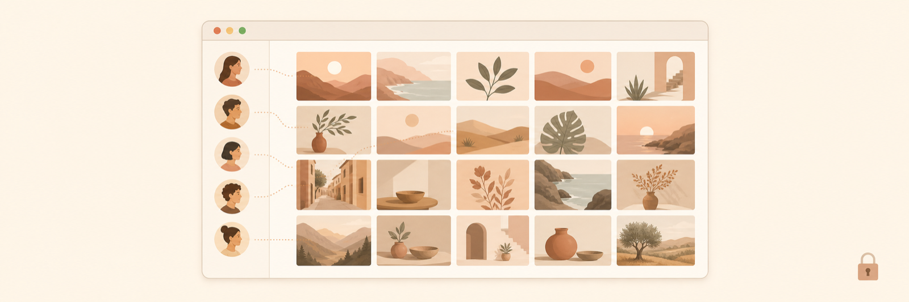
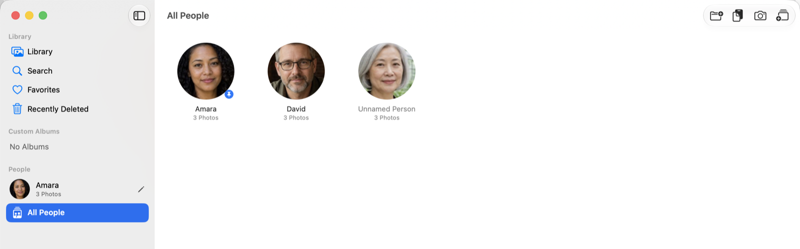
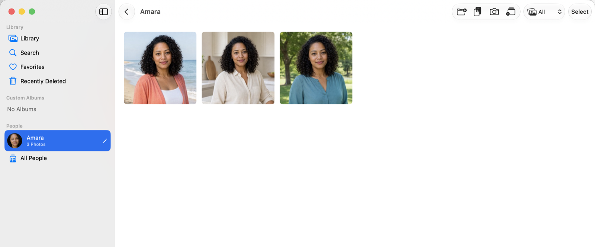
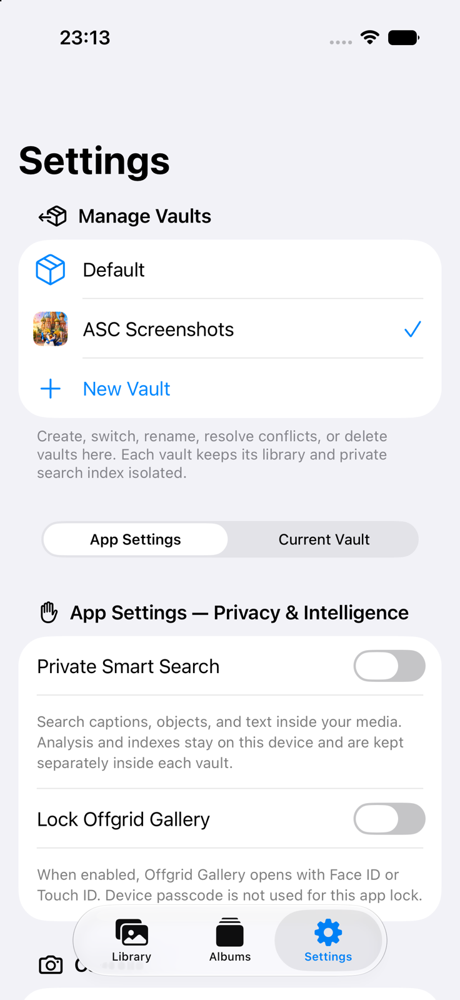

Feature brief
Offgrid Gallery 1.3
A local-first photo vault that finally recognises the people in your photos — without an account, a server, or a single byte leaving the device.

Mac
People, and the right to correct it
Offgrid Gallery finds the faces in a vault's photos and groups the ones that look like the same person — on the Mac, one vault at a time. It is off until switched on, and it skips photos the user has hidden.
Recognition is only half of it. Grouping gets things wrong, so every part of it can be corrected: name someone from a photo they are in, pin them to the sidebar, split a group that turned out to be two people, forget or delete them, or file any photo under anyone by dragging it there.
- Face data lives inside that vault's own folder — never in iCloud Drive, even when the photos are, and never in a backup.
- People never span vaults. Switching vaults shows that vault's own people and nothing else.
- Deleting the vault deletes the face data with it, and it can be deleted on its own at any time.


Mac
Search that reads the photo, on the machine holding it
Private Smart Search indexes the text inside a photo, what Vision recognises in it, and a visual feature print for ranking similarity — into a separate Search.sqlite kept inside each vault. On the Mac an on-device model can also write a one-sentence description of each photo, which is what makes “what does this photo show” searchable at all.
On macOS 27, Visual Intelligence can answer from the active vault — but only once the user has turned Smart Search on. Without that opt-in there is no index, and the vault is not searched on behalf of a system feature nobody asked for. Subject Studio and Find Similar arrive on the Mac in this release too.
iPhone and iPad
Intelligence that stays opt-in
The same private search comes to iPhone and iPad, off until the user turns it on and acknowledges what the first pass costs in battery. Quality Capture makes the built-in camera worth using — 24 MP or 48 MP stills and 720p, 1080p or 4K video, chosen from an always-visible Silent/Quality control that falls back gracefully on cameras that cannot reach the chosen resolution. On iOS 27, Subject Studio lifts a subject with iterative Vision segmentation and hands back a transparent PNG, a vault item, or a subject-aware wallpaper.
Shortcuts open Search or the Camera and stop there. No media, captions or vault names ever reach system surfaces.

What the app does not do
- No account, no sign-in, no server, no analytics, no ads, no third-party SDK — Apple frameworks only.
- Nothing is published to Spotlight, searchable activities, or any other system index.
- Face grouping, photo descriptions, OCR and similarity ranking all run on the device.
- Every intelligence feature is off by default and can be deleted independently of the photos.
- Full-resolution media uses complete file protection and is excluded from iCloud backup.